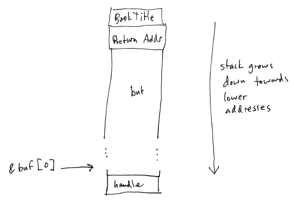

[Finish Protection from last lecture]
Breach of confidentiality: e.g., stealing
customer information
Breach of integrity: modifying data
without authorization
Breach of availability: destroying data
Theft of service: unauthorized use of
system, e.g., installing a spam relay
Denial of service: preventing legitimate
use of the system
Masquerading: attacker pretends to be a
legitimate user. E.g., steals password or private encryption key.
Man-in-the-middle: interposes between
legitimate user and system.
Physical.
If an attacker can gain physical access to a system, all bets are off.
Human.
Must prevent "social engineering" attacks. E.g., phishing attacks
request private information from users in the guise of legitimate email
from a trusted service provider (ebay, paypal, etc.) Another
possibility: call someone and claim to be from the I.T. dept, asking
for password.
This is hard to do because many computer
users are not technically savvy. And the ones who are might still
be fooled by a clever enough trick.
Operating
system. Prevent deliberate or accidental security
compromises. Examples:
Password cracking.
Fork bomb denial of service.
Exploitation of bugs where a privilege
escalation could occur.
Interesting question: how can we
distinguish legitimate use from accidental or deliberate misuse?
Network.
Networks vastly increase the possibilities for attackers to breach
security.
Trojan horse. A
program that masquerades as a legitimate application. User may
reveal sensitive information, not realizing that the program is
malicious.
Example:
a program that masquerades as the login screen. Unsuspecting
users may try to log in by typing their usernames and passwords.
Program records them, says "invalid password". Incidentially,
this is why you have to type Ctrl-Alt-Del to log into a Windows machine.
Trap door.
Implementers of system software may deliberately leave in a "back door"
to escalate privileges.
Example:
Ken Thompson, one of the inventors of Unix, added a clever trap door to
Unix. The "login" program would allow login using a special
username/password not in the system password database. Since Unix
is distributed with source code, this trapdoor would have been obvious
to anyone reading it. So, special code was added to the compiler
to detect when the login program was being compiled, in order to insert
the trap door code automatically. Again, the compiler was
distributed with source code, which would have made the trap door
obvious. So, the default install of the operating system included
a special binary compiler executable that could detect:
1. When the login program was recompiled,
in order to compile in the trap door code
2. When the compiler program was
recompiled, in order to compile the "detect login program compilation
and insert trapdoor code" code
This backdoor persisted undetected for
many years, and was eventually revealed as part of his Turing award acceptance
speech.
Logic bomb. Program
that is covertly installed, and triggered later. E.g., a
disgruntled system administrator uses legitimate root privileges to
install a script that erases the hard drive 2 weeks after he/she quits.
Stack or Buffer Overflow.
An easily-exploited kind of bug in C and C++ programs.
Consider the following function, which might be part of a web app:
int TitleSearch(const char *bookTitle)
{
char buf[1024];
QueryHandle *handle;
sprintf(buf, "SELECT id FROM book WHERE title = '%s'", bookTitle);
handle = ExecuteQuery(buf);
while (FetchRow(handle)) {
BookResult(FetchAttribute(query, 0));
}
CloseHandle(handle);
}
Bugs? [Discuss.]
Consider the layout of the activation record for the call to the
TitleSearch
function:

Typically, a stack frame consists of parameters (argument values
pushed on the stack by the caller), a return address (the address of
the instruction immediately following the subroutine call instruction),
and then local variables defined in the called function. There is
also usually some scratch space that we're not showing here.
Now consider what happens if the string bookTitle contains more than
1023 characters: it will overwrite
the return address. That means that when the function
returns, it will return to the instruction who's address is stored in
the return address field in the activation record. An attacker
can construct a special bookTitle that will overwrite the return
address with any value she chooses. By carefully constructing
bookTitle, the return address can be used to execute code that is
inside the buf array. This causes the execution of arbitrary
machine code chosen by the attacker.
There are a number of details that the attacker has to get just
right: she has to know (to a close approximation) the address at which
the buf array will be loaded in memory, to ensure that the forged
return address executes code that is inside buf.
Arbitrary code execution is, in many ways, a worst case for a
security compromise, since it allows the attacker to perform any
operation that is allowed by the protection domain of the attacked
process. (This is a good argument for not running servers with
root privileges.)
Buffer overflow attacks are especially bad if they occur in a setuid
executable. This allows escalation of privileges to the
protection domain of the user recorded as the owner of the
executable. A buffer overflow in a setuid root executable means
that any user account allowed to execute the executable can escalate to
root privileges.
A self-replicating program. Lots of infection and propagation
methods are possible:
Infection:
Installs itself in a hidden directory
Attaches itself to a host executable or
file
Installs itself in the boot block
Propagation:
Copies itself into new locations
Attaches itself to new executables or
files
Sends itself over network
Virus-detection programs attempt to detect and eliminate viruses
that have installed themselves. Generally, they work by scanning
each file in the filesystem and looking for a virus signature: a speial
sequence of bytes that is unique to the virus.
Viruses use a number of techniques to conceal themselves, including:
Polymorphism: virus changes its own code
to avoid virus detectors that look for fixed signatures.
Encryption: a virus can encrypt its own
code, decrypting when executed.
Stealth. a virus can modify the
system software to prevent detection. E.g., change the read
system call to prevent revealing what files have been infected.
Multipartite: use multiple infection
mechanisms.
Armored: obfuscate the code to prevent
analysis by researchers.
With ubiquitious networking, sensitive data is travelling over the
network.
If any sensitive data is sent in plaintext,
then it could be intercepted and cause a security compromise.
Encryption can be used to protect sensitive information. The
most common encryption technique is public-key encryption:
Both parties that wish to communicate
create a private key and a public key; the combination of private and
public keys is known as a key pair. Private keys are kept
private, and are known only to the owner of the key. Public keys
are made known to everyone, including potential attackers.
To send a message to someone, you encrypt
it with their public key. A message encrypted with a public key
can only be decrypted if you have the matching public key.
Authentication is the problem of finding out the identity of a party
involved in communication. Public key encryption can be used to
build a secure authentication mechanism. E.g.:
Bob wants to prove his identiy to Alice.
Alice sends a challenge encrypted with
Bob's public key. This challenge is only readable by someone who
has Bob's private key.
Bob deciphers the challenge, encrypts it
with Alice's public key, and sends it back to Alice.
Note that an untrustde party who intercepts will not be able to
decipher either message, because reading them would require Bob's and
Alice's private keys.
A potential problem with public key encryption is the
man-in-the-middle attack. If someone can intercept and alter
messages sent, then he/she could distort the public keys. E.g.:
[diagram]
The problem is that Bob should only use a public key to communicate
with Alice if he has a good reason to trust that the public key is
authentic. So, how does Bob acquire Alice's public key?
Could be done out of band.
Or, could be done through a key-distribution mechanism. Such a
mechanism could be done using a root
certificate: this is essentially a well-known public key of a
trusted party. Bob can obtain a trustworthy public key for Alice
if it is signed by the trusted authority using the private key matching
the root certificate.
A root certificate can also be used by the trusted party to endorse
another trusted party, establishing a chain of trust.